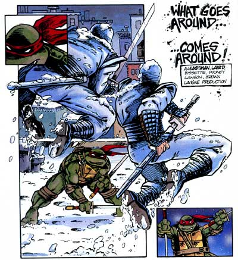

(日記とか言うモノ)
今日、ついに発売されましたねえ。
なにって、グリム＆エビルのコミックですよ！これだよこれ!
CNがこいつを日本で放映してくんないものだから、コミックで我慢するかね。
今週は超過密スケジュール！決定！オレに死ねってことですかぁ。
そうだろうと思い、必死でレビュー書いたかいがあったものだ。今書かねば今週ずう～っと更新停止に違いない！ってことで眠い目こすりながら書きました。どーですか～。
ところで、コミックのペンシラーといえばフィル・モイなんですが、最近クックさんの活躍がめざましいですな。この人ほんとに心底からガールズが好きみたいで、今でこそプロとなってますが、昔からガールズのマンガをいっぱい描いてたし、海外の掲示板とかみるとガンガン書き込んでる！
なんかもう、生涯１パワパフ作家って人ですねえ。
今週は激しく忙しくなりそうで、またもや更新がとどこおりそうですねえ。
年末まではこのペースなのかなあ。
そういや、アクセス解析なんてつけてみたけど、すっかり忘れてたよ。
うちくらいの規模じゃ特に意味ねーしなあ。
そんなわけで、解析結果を久々に覗いてみる。
といっても、別にどうということはないんだけどね。
数日間のアクセス数を比較してもだいたい同じ。
てことは、いつもココを巡回してくれてる人がけっこういるってことかな？だとしたらありがたいねえ。
最近は日記しか更新してないのにね。
時間的には、なぜか朝の10時ころとか、12時くらいが多い。もしかして会社からみてるの？
まあ、なんだかんだいって夜8～12時くらいが一番のピークなんだけどさ。たまに夜中の4時とか5時とかに来る人もいるみたいだけど、いったいなにをしている人なんでしょうか？
OSはやっぱりWindowsXP,Me,98でほとんどをカバー。年代のわりに意外に98が多かったり。みんな物持ちがいいねえ。まあオレもそれで十分だと思うけどね。Macもだいたい10～20%くらいあって、けっこう健闘しているかも。（でも日本市場じゃ比率どおりかな？）たまにLinuxとかあってほほえましい。（あの人か？）
でもDreamCastでアクセスしてくれてる人もいるみたいで、ちょっとビックリ。この日記のページはCSSを使いまくりなんで、ちゃんと見えてるのか心配。他のページはなるべく問題ないように作ってるつもりなんだけど、どーなんでしょう？古いネスケやOperaとか大丈夫かな？
ブラウザのUserAgentいじってるのかたまにヘンなブラウザ名が出るのには笑った。
あと、どこのリンクから来てるのかもわかるんだけど、まあ大半はブックマーク（お気に入り）からですね。ありがたいことです。どーもです。
あとはたいがいバラバラなんですが、ブックマークの次に多いのがなんと、パワパフサーチさんから。改めて影響力を感じましたよ。やっぱパワパフのポータルサイトなんですかねえ。
ああ、こうしていろいろと想像しながら見るとけっこうおもしろいかも。でも、きっとすぐに「どーでもいいや」ってアキるんだろうなあ。
BBSのカキコみて、衝動的にコミックを買いに走る私。
今日は久々にのんびりしようかとおもったけど、結局そうもしてられないってのはなんの因果か。
まあ、それはともかく。
今回はなんとまあ、アレがコレに！ってもったいぶりすぎですか？
まあそこまでビックリするものじゃないんですが、ビックリする人にはビックリすると。
いや、ほんとたいしたことではないんですけどね。内容とは関係ないし。
てなわけで今日はのんびりしたいのでコミックレビューはそのうちってことで。
ところでDVDなんですが、アマゾンのパッケージ画像は間違いだと判明。
正しいパッケージはこちらのワーナーのサイトで確認ください。
DVDにのみ特典映像付きのうえ、英日音声および英日字幕付きってことで、DVDのほうが遙かにお得ですなあ。ってビデオはレンタル専用かよ。特典映像はメイキングとかインタビューとか未公開映像とかあるみたいなんですが、そのほかにも・・・・デクスターのショートフィルムも。って併映したあれかよ。
あれもデクスターらしいといえばらしいが、デクスターがDVD化するのは（単独タイトルではないが）日本ではこれが初めてってことを考えると・・・もうちょっと違うエピソードのほうがよかったような気がするんですが。マンダークとかグローリー大佐の話とか・・・ねえ？
なにはともかく、DVD のガールズはみんな笑ってます。オレに向かって！（希望的妄想）
はあ～今日も仕事とは因果な生活。おかげで、アメコミ屋によれなくてパワパフ新刊コミック購入できず。
ま、それはともかく。
パワパフムービー日本語版が正式に発売決定したみたい。え、遅い？いいじゃん2、3日くらい情報遅くったって。パワパフだけで私の人生が支配されてるわけでもなし。
それはそうと、某所でも書いてあったけど、パッケージのデザインが微妙に変化。
微妙なとこなんだけど、ブロッサムが怒ってるんだよ。なんで？
こちらがDVDの表紙（アマゾンより）、で、こっちがまだ残ってるムービーのサイト
ほらね、ブロッサムの口が（U）から（∩）へ。
ブロッサム～おとなしく発売まで待ってるから怒らないでくれ～。
とか言ったら、発売時にはまたにっこり笑ってたりして。(笑)
もう金曜日ですか。一週間はえーよ。
ま、それはともかく。
冥府魔道 ｷﾀ━━━━━━(ﾟ∀ﾟ)━━━━━━ !!!!
サムライジャックなんですが、子連れ狼登場ですよ！うわ、カッコイイ！
相変わらず建築関係間違いまくりなんだけど、もうどうでもいいって感じ。
狛犬とか、あれって中国型狛犬ですよ。正確には狛犬じゃなくって獅子。
でもそんなことはもうどーでもいい。あれだよあれ、あれを日本と思うからどうかと思うのであって、FFとかロマンシング・サガとかに出てくる、ファンタジー界のアジア風都市だと思えば、あんなもんだ。だいたい、「さる国で・・・」とか言ってるけど、「日本」とは言ってないしね。
そういや、子連れ狼ってあっちじゃけっこう人気なんだよね。Dark Horseから「Lone Wolf and cub」って題で翻訳出版されていて、大人気です。その人気のほどは、「LONE WOLF 2100」っていうオリジナル・チャンバラ・アメコミが出てるくらい。 2100年の未来社会で子連れ狼が、アンドロイドやハイテクな敵相手に刀で戦うつう内容。
・・・・・サムライジャックじゃん。
もう木曜日ですか。もうすぐ一週間もおわっちゃうんですか。
ま、それはともかく。
眠りってのは不思議なものですなあ。
起きていると、時間がもったいなくてなかなか寝ようとはしないくせに、一旦眠ってしまうと、今度は起きたくなくなる。あ、単に私が夜型人間だからですか？
あ～でも最近寒くなってきて、ますます布団から出たくなくなりますねえ。
その上、私男のくせに低血圧でして。もう朝とか全然ダメですよ。午前中なんて一言もしゃべりませんよ。
前に健康診断を受けたときに、あんまし低いんで再検査ってことで、「もう一回はかりますのでしばらくしてから来てください。」なんて言われまして。
ついでに「そこ、階段をしばらく上り下りしてから来るといいですよ」
って！いいのかそれで！！！
まあ、病院の人もめんどうくさかったんだろうなああ。
あ、ついでに私、夢の続きを見ることが出来るんです。「他人の夢ほどつまらないものはない」と言ったのはダレだったか。まあ、私も同感ですな。世の中でもっともドウデモいい話の一つですね。「他人の夢」
逆を返せば、「自分の夢」ほど面白いモノはないってことですが。そんなわけで、いいところで目が覚めてしまった夢の続きをみられる私は、今日もまた朝起きられないというわけです。
世の中、いやなもの、嫌いなものってのはいろいろありますが、なにがイヤって・・・
電車の席に座らないヤツ！！！！
友人と喋ってる最中に一人席に座るとしゃべりにくいからってのはわかります。
席空いたけど、次降りるんだよなあ、いまさら座ったり立ったりもめんどうだ。ってのもわかります。
読んでる本に夢中で席が空いたのにも気が付かない。わかります。わかります。
しかし、一人でぼーっと突っ立てるオマエ！なにかんがえとんじゃ～。
混んでるんだから、席が空いたら座れよ！オマエのスペース分だけでも余裕ができるんじゃ！
しかも、混んでるもんだから押されまくってるのに、ガンとして立ちつくすオマエ。いったいナニが君をそうさせたのか。ていうか、迷惑だから座れ。今電車が混んでいるってこと自覚してる？
もしかして、立ってるのがカッコいいかと思ってるのか？ダレも君みてカッコイイなんて思ってないって。それとも鍛えてるの？別にそんなことじゃ鍛えられないって。だったらつま先立ちで終着駅までゆけい！
まったくもって世の中わからんよ。
よく駅にマナーをうながすポスターとかあるけどさ、
「リュックがじゃま」「大股開きで席を陣取どらない」「席をゆずりましょう」
これらなんか、「混んでいて目の前の席が空いたのに座らないヤツ」なんかよかよっぽどマシじゃないかい。
リュックとかしょってたっていいじゃない。だって荷物だろ。それともなにか、でかい旅行鞄やでかいボストンバックや、でかいファイルケースや、花束やらを持ってる人はのっちゃいかんというのか？同じだろうが。あれなんか、かさばっても上の方は空いてるから、本くらい読めるスペースはあるしな。
大股開きも、席をゆずらんも、座ってるだけよっぽどまし。降りれば席は空くし、なにより無駄にはしてないだろう。まるで防波堤のように無駄なスペースを死守する「座らないやつ」はこれらなんかより、遙かに救いようにない罪悪だ。
ああいうホスターとか作ってるやつらもそこんとこに気がつけよ。いいかげん。 な。
まあ、一回聞いてみたいね。「何で座らないの？」って。どうせ理由なんかないよきっと。
うーん、今週も忙しくなりそうだぁ。
ま、それはともかく。某所にあるパワーパフ野球ゲームに今日は、はまってしましました。
ああああ、バブルスのフォークが憎い。なかなか難しい？ですかね。
Macだからかわからんけど、時たま反応が鈍くなるのがつらい。
MRJはOS-Xのほうが性能いいのかなあ。それともホコリかぶってるMac用Linuxでもひっぱりだそうかしらん。
でもね、出たんですよ。ホームラン！わーいわーい。
このゲームそのうちバターカップが投手として登場予定らしく、考えるだけでも恐ろしい・・・
関係ないけど、裏ページ充実してきたなあ。
サムライジャック、新作好調ですねえ。
ところでジャックといえば・・・・
カートゥーン好きならやっぱりサムライジャック。
格闘技好きならジャック・ハンマー。
医者ならブラック・ジャック。
ミステリ好きなら切り裂きジャック。
ゴスならやっぱりジャック・オー・ランタン。
海洋生態学ならジャック・モイヤー。
ゴルフ好きならジャック・ニクラウス。
個性派俳優ならジャック・ニコルソン。
ジャックといえば、あなたはダレを思い浮かべますかね。
私は・・・・・ジャック・バンコラン！
いや～、好きなんですよ「パタリロ」。魔夜峰夫は天才ですよ。一度でいいから伝説の魔夜峰夫生原稿とやらを見てみたいものです。
なんか関係ない話みたいですが、これが関係大あり。なんでかっちゅうと、パタリロは「カートゥーン」なんですよ。それはね・・・・パタリロは四本指なんですたい！
ついでに、久々に自分のサイトの総チェックとかやってみたり。
いやねえ、リンク間違いや、コミックのタイトル間違いとか最近あったものでねえ。自分にとっては昔に作ったコンテンツでも初めて来た人にとっちゃ全部新しいモノなんですよね。ほかのサイト様って自分のサイトの内容とかなんども見返したりしてるんでしょうか？
古いやつを改めて読み返してみたりすると、文体とかちがっちゃっててチグハグな気がしないでもないんですが、まあこれもまた足跡ってことで我慢して直すことはしませんでしたが、誤字脱字とかちょこちょこと直す。でも、そーいうのって自分じゃなかなか気が付かないものなんだよねぇ。
でね、50の質問とやらを今更ながら読み返してみると、それを書いた当初とは微妙にかわってるんだよね。映画だってとっくに公開済みだし。まあそれはそれとして、私凄いこと言ってたのね。
＞Q30 これから出て欲しいと思うグッズは？（キャラ・日用品・新たなアクセサリー etc…）
＞「スパイダーマン パーフェクト・ガイド」みたいな「パワパフ パーフェクト・ガイド」。
＞インタビューや裏話、全話データベース、などひたすらマニアックに突き詰めた本。もちろん日本語版で。
＞まあ、まだまだ歴史が浅いから5年後くらいに。
予言ですか！実現したじゃん。欲しいもの。しかも本の名前までいっしょ！
なんで自分で言っといて今まで思い出してなかったというと、ここで妄想してた本と、現実に出た本があまりにも違っていてイメージがだぶらなかったからなんだと思う。やっぱここまでの本はもう少し熟成してからですかね。
てなわけで、2007年にもう一度思いだしてみよう。
なんか気が付けば2万アクセスか・・・・
なんにもないし、なんか用意する時間もない。まあ、しなきゃいけないってことは、まるでないんだけどね。
でもまあ、一応カウンターなんぞつけてるからには区切りになんかしたいとこ。
なんかおもしろそうなものないかな～とあちこち探してみたり。
けっこうあちこちで見かけるCGIBOYってやつを覗いてみると、いろいろあるなあ、と思いきやBBSやらチャットやら日記やら、とよく見かけるものばかり。うーん、今ので別に困ってないし。
てなわけで、アクセス解析とやらをつけてみた。
いや別にあんまし興味はないんだけどさ、簡単だったので・・・
一応どういう風に見られるものなのかちょっとは興味なきにしもあらず。ってとこですが。その程度。
なんかやってみたかったんだよー。
え、今日って木曜日だったの！
えーと、昨日から寝てないんです。家にも帰ってなかったし。
早く布団にはいりたいです。でもネットも気になってたり。ほらやっぱりメールきてるし。
ネット依存症ってほどではないでしょうが、触れないとなると逆に気になったりするんですよねこれが。
まあ、それはともかかく、今は寝よう。風邪はやってるしな。ぐー
（こんなんばっかし）
そーいやタートルズに興奮してすっかり忘れてたけど、また見ました。クラッチカーゴ。
たしか夜のリブートの後にやってました。動くクラッチを見たい人はこのへんをチェックだね。
しかし、何回かみてると、あの口実写にも慣れた・・・・人間ってすごいや！
でもリブートって人気あるのかなあ？シャドウレイダースは、けっこう好きって人たまに見かけるけど、リブート好きは見たことないなあ。これやるならHarvey Birdmanやれっての。
いやーついに始動しましたね。TMNT再生計画！
え、なんのことだって？あんたねえ、TMNTといったら決まってるでしょうが！
「ティーンエイジ・ミュータント・ニンジャ・タートルズ」！！
あのカメ忍者がアニメで帰ってくるんですよ！なんでも来年FOX系でやるみたいですねえ。
これですよ、これ。
今度はけっこうクールになってちょっぴり年齢対象が上がってますね。バットマン・ザ・フューチャー（ビヨンド）みたいです。タイトルロゴもなんかとんがってるし。
いやね、タートルズ好きなんですよ。（ちなみに特にレオナルドとドナテロが好き。）
タートルズ、実はいろいろあるんですが、オリジナル版が一番好きですね。いっとくけど、アニメがオリジナルじゃないよ、アメコミだよ。タートルズって実はアメコミ界では、ある種の伝説的存在なんですが、これはまた別の機会にでも。
で、その初期のオリジナル版ってのが、これ。かぁっこいいいいいい～～！

夜中の12時すぎたのでほんとは11日ですが、10日ってことにします。寝るまではその日ってことで。
どうも、日記読み返してみると、毎日なのに日付がとんでいたり、かさなっていたりするのがヘンな感じなんで、今後はそうすることにしました。
ま、それはそうと、ハンドルネームを「スカポン太」にしたことを少し後悔中。
いやね、なんかオフのときに「スカポン太さん」とか言いにくそうだったし、なにより実際に言葉として聞くと、ものすげえ恥ずかしいネーミングだと。あああああああああああああああああああ。
通称「スカさん」とか「ポンさん」とかにしようか・・・ううう、それはそれでやっぱりアホみたいだ。
もっとかっこいいハンドルにしとけばよかった。
ちょっと会って酒でも飲みましょうといった、小規模オフにいってまいりました。
ていうか、それに参加するために徹夜して、仕事を終わらせといたといっても過言ではない。
で、ムサイ男三人でパワパフ話・・・・・・・・・・・・
ちょっとまて、K氏よ、話が違うじゃないか！若い女の子がウハウハではなかったのか！パワパフなんだし。おいっ！
嘘です。
いやー楽しかったっす。なんかホントにあっというまでしたな。計四時間もくっちゃべっていたとは思えん。
顔会わせたのは初めてなんだけど、なんの違和感もないの。あれは不思議な感覚。（正確には、実は前にあったことはあるんだが、ほとんど記憶にないという・・）
互いにサイト持ちってこともあっていろんな話もできたし。（みんないろんな野望もってるんだなあ）
なにより、同じパワパフ好きだというのに、このシーンがいいんだよねとか言う話になると全然かみ合わないところが！（笑）それぞれ見ているところが違うんだなぁと。「このシーンがツボですよ」「ここをスロー再生してみると」とか言っても、喋ってる本人以外は「はあ？」みたいな。
つーか、G氏、もっとわかりやすいとこでバブルスにはまってください！
あーでも、おまけってことで「レノーア」持っていってよかった。よかった。とりあえず信者一人確保。
いけるかどうかわかりませんが、またさそってください。＞K氏、G氏。
おまえなあ、「あ、家で見ますから土曜にください。メアドはこれ」
って、お前ITの使い方まちがっちょる！！
徹夜かよトホホ。といいつつ、やっと終わって今寝るところ。
そんな私にBBSでの衝撃的なカキコが！
あはは、あわてないでちゃんと調べてから書きましょう。って教訓だね。
でも、この教訓ってWebではあんま意味ないんだろうなあ。すぐに修正できるし、それこそまるごと削除も！
でもまあ、今は寝ます。ねさせてください。ぐー
パワパフのパーフェクトガイド情報のあるサイトを覗いたときに、つい衝動的に注文してしまった「スーパーヒーロー・クロニクルDVD」が届きました。
時間が無くて、ちょろちょろとしか見てないんだけどこれイイかも。
あの悪名高きワーサム博士の演説映像とかあったりしてビックリ。キャプテンアメリカのアニメ映像とかもあるし。
それよりもなによりも驚いたのがフライシャー兄弟が製作したスーパーマン！
私これ初めて見たんですが、とても1941年製作とは思えないものすごい出来。動きとかもの凄くいいんですわ。噂には聞いたことあるけど、これほどとは。。
時間があったらゆっくりみようっと。ってその時間がないんじゃコラ！
今週また休みなしですか？いいかげん、週末に「じゃこれ休み明けに・・・」ってのやめろ～。それ休日仕事しろってことでしょうが！！！ たのむよ～。
「メバエ」って本を読んでちょっと気になることが。
というわけで、ちょうど今カートゥーンネットワークでやってるので観ることに。
ほんとだ！
ほんとに、スーパースリーに英語音声がない！
～ラリホーラリホーラリルレロン♪～で有名なスーパースリーなんですが、これ、原盤の音源だかフィルムだかって紛失しちゃってるらしいんですよ。そんなわけで、日本語吹き替え音声のみの放映。
この本にも書いてあるけど、「スーパースリーが観られるのは日本だけ」。
正倉院のお宝みたいに、現存するのは遙か極東の島国だけなんですなあ。 うーん、こういうことってけっこうあるのかも。そういえば、かの「西遊記」も、まともに残ってる最古のやつって日本にあるものらしいね。
隠しページが一気に充実。なんなんだ？
ていうか、疲れた。意外にあるものなんだなあ。
協力者の方に感謝。今日もスカポン太は救われた！サンキュー、情報提供者の人
隠しページなんて作ったら、なんか話が変な方向に・・・
隠すことが問題じゃなくて、その方向性がね。
パワパフのサイトめぐると、お絵かき板とかあって、いろんな方々がイラスト描いてるんですよね。まあ、それはともかく、そっから一歩進んでパワパフのマンガを描いている人ってどれくらいいるんだろうか。
また、webではないけど（例えば同人誌とか）描かれているパワパフマンガってどれだけあるんだろうか？
さらにつっこむと、どこにも公表していないけど、実はこっそり描いているってのもあるかもしれない。
さらにさらに、まだ描いてないけど、いずれは描きたい、ネタはあるけど描くまでにはいたっていない、描きたいけど発表の場がない（サイトもってなかったり、同人活動が苦手だったり）そんな埋もれたコミックの芽なんかも、どれだけあるのだろうか？
なんてちょっと考えたり。
つーか、読んでみたくはないですか。いや、読みたい。ウマい人のももちろんだが、マンガ初挑戦て人のものだって魅力的だ。
マンガてのはうまいヘタじゃくくれないものなんですよね。なにか一つヒカるものがあるだけで、よかったりするんですよ。熱意や想いだけで、心までくるものとかもあるし。
うちは基本的に批評サイトだけど紹介サイトなんですよね。コミックの。
だから、私自身がそっせんしてマンガを描くことはできないけど、紹介や、場を提供することくらいはできるんじゃないかなあとか・・・・・考えたりもするんですが。うーむ。
サムライジャックの新作みました。
しばらく待ち期間があったから、久々に新作みたときはドキドキしたねえ。
新作放映ペースは週一とはいえ、一度に二本とは・・・もったいねえ。
ていうかね、実はそのうちの一本はショートものが3本になっていて、つまりは合計一度に四本ジャックの物語をみれたんですよ。うわ、パフォーマンス高けえ。満足満足。
このショートもの、オチが唐突なものだから、最初は驚いたよ。え、さっきアレで終わりだったんかい！みたいな。ジャックってばちゃんとエンターテイメントしてるからわかりにくいかもしれないけど、かなり実験的な作品だよなあ。
個人的にはゲストで愛川欽也出てくんないかなぁ。愛川欽也って声優としては一般的にはいなかっぺ大将のニャンコ先生で有名だけど、カートゥーンファンにはおなじみだよね。これでアクー・菅原文太のコンビでトラック野郎コンビ復活だあ！ジョナサン～
いちおう、パーフェクトガイドをどこで買ったかかいとこうかね。
私は渋谷駅前のTUTAYAで買いました。ここって、レンタルビデオ屋なんだけど、渋谷店にいたっては本やゲームもあつかってるんだよね。スペースは小さいんだけど、ややマニアックな系統も揃えてあったりして、ちょっと使い勝手がよろしい。そこで、新刊のコーナーに積んでありました。
ま、それはそうと、グッズ紹介のとこにあった「ガールズ着せ替えぬいぐるみ」やばくないか（笑）
おっきなお友達が買ったひにゃ (;´Д｀)ﾊｧﾊｧ。
噂のパーフェクトガイドを買いましたよ。
やっぱし・・・・ぬるい。
つうかね、これって完全に小学生以下向け。なにしろ漢字すべてにルビふってあるしね。
子供のためにお母さんが買ってあげる本。これですね、この本のコンセプトは。
1/3がグッズ紹介か。こんだけ載せるのなら、グッズ関係のとこから広告料でもとってもう少し安くしてもいいんじゃないだろうかね。まあ、あんましグッズに詳しくない私はそれなりに新鮮で楽しめたけど。ふーん、こんなのもあるんだ。みたいな。
ただ、マイナーキャラが一覧できるのはいいね。絵としての資料にはなる。
スーパーヒーロー競争でのヒーロー達の名前も一応載ってるし。
しかーし！納得いかんのは、その会議に出席したはずの宇宙怪人ゴーストの名がないじゃないか！！